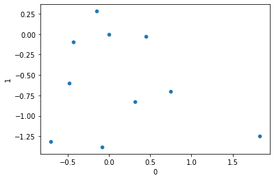
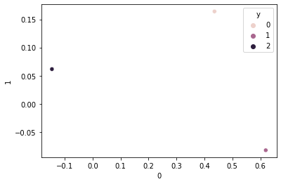
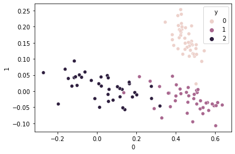
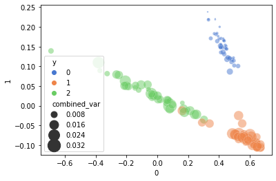
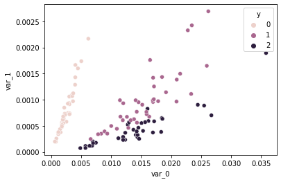
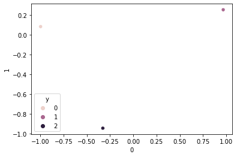
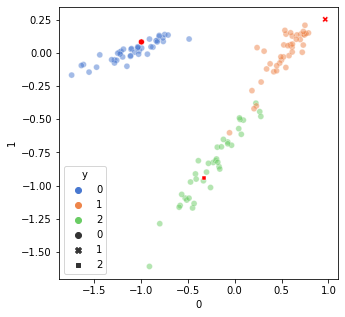

import torch
import seaborn as sns
import pandas as pd
import matplotlib.pyplot as plt
import numpy as np
Pytorch Embedding
The pytorch embedding is a simple lookup table that stores embeddings of a fixed dictionary and size. This module is used to store embeddings and retrieve them using indices. The input to the module is a list of indices, and the output is the corresponding embeddings.
A good usage of this can be used as a replacement to one-hot-encoding and replace the loss function with regression losses.
Here we would like to visualize the different embeddings by plotting converting them to a 2 dimensional manifold.
Reference
- [1] https://arxiv.org/pdf/1710.10393.pdf
- [2] https://github.com/lancopku/label-embedding-network/blob/master/ComputerVision/resnet8.py
embedding = torch.nn.Embedding(10, 2, padding_idx=5)
input = torch.LongTensor([0,1,2,3, 4, 5, 6, 7, 8, 9])
embed_output = embedding(input)
embed_output = pd.DataFrame(embed_output.tolist())
embed_output| 0 | 1 | |
|---|---|---|
| 0 | -0.080791 | -1.381228 |
| 1 | -0.146998 | 0.281716 |
| 2 | 0.746007 | -0.701610 |
| 3 | 1.822672 | -1.249770 |
| 4 | 0.450180 | -0.028375 |
| 5 | 0.000000 | 0.000000 |
| 6 | -0.433445 | -0.090980 |
| 7 | -0.479569 | -0.597076 |
| 8 | 0.313272 | -0.827177 |
| 9 | -0.703487 | -1.317037 |
embedding.weightParameter containing:
tensor([[-0.0808, -1.3812],
[-0.1470, 0.2817],
[ 0.7460, -0.7016],
[ 1.8227, -1.2498],
[ 0.4502, -0.0284],
[ 0.0000, 0.0000],
[-0.4334, -0.0910],
[-0.4796, -0.5971],
[ 0.3133, -0.8272],
[-0.7035, -1.3170]], requires_grad=True)sns.scatterplot(data=embed_output, x=0, y=1)<matplotlib.axes._subplots.AxesSubplot at 0x7f4436ab1d30>
sns.scatterplot(data=embed_output, x=0, y=1)<matplotlib.axes._subplots.AxesSubplot at 0x7f4436a10d60>
embedding.weightParameter containing:
tensor([[-0.0808, -1.3812],
[-0.1470, 0.2817],
[ 0.7460, -0.7016],
[ 1.8227, -1.2498],
[ 0.4502, -0.0284],
[ 0.0000, 0.0000],
[-0.4334, -0.0910],
[-0.4796, -0.5971],
[ 0.3133, -0.8272],
[-0.7035, -1.3170]], requires_grad=True)Pytorch IRIS
import pandas as pd
from sklearn.model_selection import train_test_split
from sklearn.metrics import accuracy_score, precision_score, recall_score
import torch
import torch.nn as nn
import torch.nn.functional as F
from torch.autograd import Variablefrom sklearn.datasets import load_iris
class Net(nn.Module):
# define nn
def __init__(self):
super(Net, self).__init__()
self.fc1 = nn.Linear(4, 100)
self.fc2 = nn.Linear(100, 100)
self.fc3 = nn.Linear(100, 3)
self.softmax = nn.Softmax(dim=1)
def forward(self, X):
X = F.relu(self.fc1(X))
X = self.fc2(X)
X = self.fc3(X)
X = self.softmax(X)
return X
# load IRIS dataset
X, y = load_iris(return_X_y=True)
train_X, test_X, train_y, test_y = train_test_split(X, y, test_size=0.8)
print (train_y, test_y)[1 2 1 0 2 2 1 1 1 1 2 1 1 2 1 0 0 0 2 2 0 2 0 2 2 2 0 1 0 2] [2 1 0 2 0 0 1 2 2 0 0 1 0 0 2 1 1 0 0 1 0 0 0 2 2 2 2 1 2 2 0 2 1 0 2 0 2
1 0 1 0 0 1 1 2 2 0 2 1 0 2 2 2 1 2 1 0 0 1 2 1 1 2 0 0 1 2 1 2 1 2 1 1 0
1 1 2 1 1 0 0 0 2 0 2 2 2 0 1 2 0 2 1 2 2 0 0 1 1 1 0 1 0 0 0 0 0 1 2 2 2
1 0 1 1 1 0 1 0 1]
# wrap up with Variable in pytorch
train_X = Variable(torch.Tensor(train_X).float())
test_X = Variable(torch.Tensor(test_X).float())
train_y = Variable(torch.Tensor(train_y).long())
test_y = Variable(torch.Tensor(test_y).long())
net = Net()
criterion = nn.CrossEntropyLoss()# cross entropy loss
optimizer = torch.optim.SGD(net.parameters(), lr=0.01)
for epoch in range(1000):
optimizer.zero_grad()
out = net(train_X)
loss = criterion(out, train_y)
loss.backward()
optimizer.step()
if epoch % 100 == 0:
print ('number of epoch {} loss {} '.format(epoch, loss))
predict_out = net(test_X)
_, predict_y = torch.max(predict_out, 1)
print ('prediction accuracy', accuracy_score(test_y.data, predict_y.data))
print ('macro precision', precision_score(test_y.data, predict_y.data, average='macro'))
print ('micro precision', precision_score(test_y.data, predict_y.data, average='micro'))
print ('macro recall', recall_score(test_y.data, predict_y.data, average='macro'))
print ('micro recall', recall_score(test_y.data, predict_y.data, average='micro'))number of epoch 0 loss 1.10525643825531
number of epoch 100 loss 0.906145453453064
number of epoch 200 loss 0.8332260251045227
number of epoch 300 loss 0.7851205468177795
number of epoch 400 loss 0.7443270087242126
number of epoch 500 loss 0.7093335390090942
number of epoch 600 loss 0.6817362308502197
number of epoch 700 loss 0.661094605922699
number of epoch 800 loss 0.6458678841590881
number of epoch 900 loss 0.6344795823097229
prediction accuracy 0.9833333333333333
macro precision 0.9833333333333334
micro precision 0.9833333333333333
macro recall 0.9833333333333334
micro recall 0.9833333333333333print ('a {} {} '.format('b', 'c'))a b c Embedding and Regression
class Net(nn.Module):
# define nn
def __init__(self):
super(Net, self).__init__()
self.fc1 = nn.Linear(4, 100)
self.fc2 = nn.Linear(100, 100)
self.fc3 = nn.Linear(100, 2)
#self.softmax = nn.Softmax(dim=1)
def forward(self, X):
X = F.relu(self.fc1(X))
X = self.fc2(X)
X = self.fc3(X)
return Xembed = torch.nn.Embedding(3,2)
embed_train_y = Variable(embed(train_y))
embed_test_y = Variable(embed(test_y))
true_embed = embed(torch.LongTensor([0,1,2]))
true_embed = pd.DataFrame(true_embed.tolist())
true_embed['y'] = [0, 1, 2]
sns.scatterplot(data=true_embed, x=0, y=1, hue='y')<matplotlib.axes._subplots.AxesSubplot at 0x7f44369e5940>
net = Net()
criterion = nn.MSELoss()# cross entropy loss
optimizer = torch.optim.SGD(net.parameters(), lr=0.01)
for epoch in range(1000):
optimizer.zero_grad()
out = net(train_X)
loss = criterion(out, embed_train_y)
loss.backward()
optimizer.step()
if epoch % 100 == 0:
print ('number of epoch {} loss {} '.format(epoch, loss))
predict_out = net(test_X)
print (' Test MSE ', torch.abs(predict_out - embed_test_y).mean())number of epoch 0 loss 0.3358815610408783
number of epoch 100 loss 0.042973946779966354
number of epoch 200 loss 0.036721814423799515
number of epoch 300 loss 0.03191041201353073
number of epoch 400 loss 0.027886144816875458
number of epoch 500 loss 0.024619022384285927
number of epoch 600 loss 0.021988747641444206
number of epoch 700 loss 0.01982944831252098
number of epoch 800 loss 0.018047431483864784
number of epoch 900 loss 0.02423388510942459
Test MSE tensor(0.0877, grad_fn=<MeanBackward0>)embed_output = pd.DataFrame(predict_out.tolist())
embed_output['y'] = test_y.tolist()
sns.scatterplot(data=embed_output, x=0, y=1, hue='y')<matplotlib.axes._subplots.AxesSubplot at 0x7f4436964520>
Gaussian Regression
class GaussianNet(nn.Module):
# define nn
def __init__(self):
super(GaussianNet, self).__init__()
self.fc1 = nn.Linear(4, 100)
self.fc2 = nn.Linear(100, 100)
self.fc3 = nn.Linear(100, 2)
self.variance = nn.Linear(100, 2)
#self.softmax = nn.Softmax(dim=1)
def forward(self, X):
X = F.relu(self.fc1(X))
X = self.fc2(X)
out = self.fc3(X)
var = F.softplus(self.variance(X))
return out, var
net = GaussianNet()
criterion = nn.GaussianNLLLoss()# Gaussian NLL loss
#criterion = nn.MSELoss()# Gaussian NLL loss
#optimizer = torch.optim.SGD(net.parameters(), lr=0.01)
optimizer = torch.optim.AdamW(net.parameters(), lr=0.001)
for epoch in range(1000):
optimizer.zero_grad()
out, var = net(train_X)
loss = criterion(out, embed_train_y, var)
loss.backward()
optimizer.step()
if epoch % 100 == 0:
print ("out " , out[0])
print ("var " , var[0])
print ('number of epoch {} loss {} '.format(epoch, loss))
predict_out, predict_var = net(test_X)
print (' Test MSE ', torch.abs(predict_out - embed_test_y).mean())out tensor([ 1.2781, -0.3668], grad_fn=<SelectBackward0>)
var tensor([0.5012, 0.6097], grad_fn=<SelectBackward0>)
number of epoch 0 loss 0.41761282086372375
out tensor([ 6.1669e-01, -5.4980e-04], grad_fn=<SelectBackward0>)
var tensor([0.0310, 0.0035], grad_fn=<SelectBackward0>)
number of epoch 100 loss -1.5372980833053589
out tensor([ 0.5606, -0.0783], grad_fn=<SelectBackward0>)
var tensor([0.0197, 0.0022], grad_fn=<SelectBackward0>)
number of epoch 200 loss -2.0017826557159424
out tensor([ 0.5585, -0.0794], grad_fn=<SelectBackward0>)
var tensor([0.0341, 0.0144], grad_fn=<SelectBackward0>)
number of epoch 300 loss -1.6041406393051147
out tensor([ 0.6390, -0.1252], grad_fn=<SelectBackward0>)
var tensor([0.0173, 0.0026], grad_fn=<SelectBackward0>)
number of epoch 400 loss -2.2373907566070557
out tensor([ 0.6222, -0.0581], grad_fn=<SelectBackward0>)
var tensor([0.0159, 0.0107], grad_fn=<SelectBackward0>)
number of epoch 500 loss -2.0754570960998535
out tensor([ 0.6291, -0.0862], grad_fn=<SelectBackward0>)
var tensor([0.0069, 0.0005], grad_fn=<SelectBackward0>)
number of epoch 600 loss -2.6287074089050293
out tensor([ 0.6051, -0.0870], grad_fn=<SelectBackward0>)
var tensor([0.0062, 0.0011], grad_fn=<SelectBackward0>)
number of epoch 700 loss -2.4698598384857178
out tensor([ 0.6261, -0.0507], grad_fn=<SelectBackward0>)
var tensor([0.0120, 0.0603], grad_fn=<SelectBackward0>)
number of epoch 800 loss -1.6372172832489014
out tensor([ 0.6267, -0.0832], grad_fn=<SelectBackward0>)
var tensor([0.0051, 0.0049], grad_fn=<SelectBackward0>)
number of epoch 900 loss -2.361809015274048
Test MSE tensor(0.0631, grad_fn=<MeanBackward0>)embed_output = pd.DataFrame(predict_out.tolist())
embed_output['y'] = test_y.tolist()
embed_output[['var_0', 'var_1']] = predict_var.tolist()
embed_output['combined_var'] = embed_output['var_0'] + embed_output['var_1']
sns.scatterplot(data=embed_output, x=0, y=1, hue='y', size='combined_var',
sizes=(4, 400), alpha=.5, palette="muted")<matplotlib.axes._subplots.AxesSubplot at 0x7f44368c7640>
sns.scatterplot(data=embed_output, x='var_0', y='var_1', hue='y')<matplotlib.axes._subplots.AxesSubplot at 0x7f44369e5280>
embed_output.describe()| 0 | 1 | y | var_0 | var_1 | combined_var | |
|---|---|---|---|---|---|---|
| count | 120.000000 | 120.000000 | 120.000000 | 120.000000 | 120.000000 | 120.000000 |
| mean | 0.327190 | 0.036141 | 0.966667 | 0.010574 | 0.000746 | 0.011319 |
| std | 0.291685 | 0.104080 | 0.819237 | 0.007504 | 0.000511 | 0.007713 |
| min | -0.689349 | -0.107067 | 0.000000 | 0.000642 | 0.000074 | 0.000841 |
| 25% | 0.145816 | -0.073233 | 0.000000 | 0.003095 | 0.000380 | 0.004076 |
| 50% | 0.418697 | 0.028199 | 1.000000 | 0.011524 | 0.000624 | 0.012242 |
| 75% | 0.534689 | 0.135289 | 2.000000 | 0.015900 | 0.000967 | 0.016656 |
| max | 0.673590 | 0.237829 | 2.000000 | 0.035810 | 0.002695 | 0.037705 |
Learning Embedding while training
Million dollar question will the network converge while training
class Net(nn.Module):
# define nn
def __init__(self):
super(Net, self).__init__()
self.fc1 = nn.Linear(4, 100)
self.fc2 = nn.Linear(100, 100)
self.fc3 = nn.Linear(100, 2)
#self.softmax = nn.Softmax(dim=1)
self.embed = nn.Embedding(3,2,max_norm=True)
self.embed.weight = nn.Parameter(torch.normal(0, 5, size=(3, 2)))
def embed_label(self, Y):
return self.embed(Y)
def forward(self, X, Y):
X = F.relu(self.fc1(X))
X = self.fc2(X)
return self.fc3(X), self.embed(Y)#embed = torch.nn.Embedding(3,2)
net = Net()
embed_train_y = Variable(net.embed_label(train_y))
embed_test_y = Variable(net.embed_label(test_y))
true_embed = net.embed_label(torch.LongTensor([0,1,2]))
true_embed = pd.DataFrame(true_embed.tolist())
true_embed['y'] = [0, 1, 2]
sns.scatterplot(data=true_embed, x=0, y=1, hue='y')<matplotlib.axes._subplots.AxesSubplot at 0x7f44359ea490>
for name, param in net.named_parameters():
if param.requires_grad:
print (name, param.shape)fc1.weight torch.Size([100, 4])
fc1.bias torch.Size([100])
fc2.weight torch.Size([100, 100])
fc2.bias torch.Size([100])
fc3.weight torch.Size([2, 100])
fc3.bias torch.Size([2])
embed.weight torch.Size([3, 2])
criterion = nn.MSELoss()# cross entropy loss
optimizer = torch.optim.SGD(net.parameters(), lr=0.01)
#embed_optimizer= torch.optim.SGD(embed.parameters(), lr=1e-1)
before = torch.zeros_like(net.embed.weight)
before_fc3 = torch.zeros_like(net.fc3.weight)
for epoch in range(1000):
net.zero_grad()
#embed_optimizer.zero_grad()
out, embed_train_y = net(train_X, train_y)
embed_train_y = Variable(embed_train_y)
loss = criterion(out, embed_train_y)
loss.backward()
optimizer.step()
#embed_optimizer.step()
if epoch % 100 == 0:
print ('number of epoch {} loss {} '.format(epoch, loss))
after = net.embed.weight
after_fc3 = net.fc3.weight
# calculate the diff between the weights before an update and after the update**
print ('After update : embed equal', torch.equal(before.data, after.data))
before = net.embed.weight.clone()
print ("fc3 equal ", torch.equal(before_fc3.data, after_fc3.data))
before_fc3 = net.fc3.weight.clone()
predict_out,embed_test_y = net(test_X, test_y)
print (' Test MSE ', torch.abs(predict_out - embed_test_y).mean())number of epoch 0 loss 0.7351046800613403
After update : embed equal False
fc3 equal False
number of epoch 100 loss 0.2303016483783722
After update : embed equal True
fc3 equal False
number of epoch 200 loss 0.17618589103221893
After update : embed equal True
fc3 equal False
number of epoch 300 loss 0.1351977288722992
After update : embed equal True
fc3 equal False
number of epoch 400 loss 0.11154220253229141
After update : embed equal True
fc3 equal False
number of epoch 500 loss 0.09350577741861343
After update : embed equal True
fc3 equal False
number of epoch 600 loss 0.0817851573228836
After update : embed equal True
fc3 equal False
number of epoch 700 loss 0.08192727714776993
After update : embed equal True
fc3 equal False
number of epoch 800 loss 0.14396952092647552
After update : embed equal True
fc3 equal False
number of epoch 900 loss 0.1144104152917862
After update : embed equal True
fc3 equal False
Test MSE tensor(0.2455, grad_fn=<MeanBackward0>)true_embed = net.embed_label(torch.LongTensor([0,1,2]))
true_embed = pd.DataFrame(true_embed.tolist())
true_embed['y'] = [0, 1, 2]
sns.scatterplot(data=true_embed, x=0, y=1, hue='y')<matplotlib.axes._subplots.AxesSubplot at 0x7f4435975310>f, ax = plt.subplots(1,1,
figsize=(5,5))
embed_output = pd.DataFrame(predict_out.tolist())
embed_output['y'] = test_y.tolist()
sns.scatterplot(data=embed_output, x=0, y=1, hue='y',
alpha=.5, palette="muted", ax=ax)
sns.scatterplot(data=true_embed, x=0, y=1, style='y', ax=ax, color='r')<matplotlib.axes._subplots.AxesSubplot at 0x7f44357dedc0>